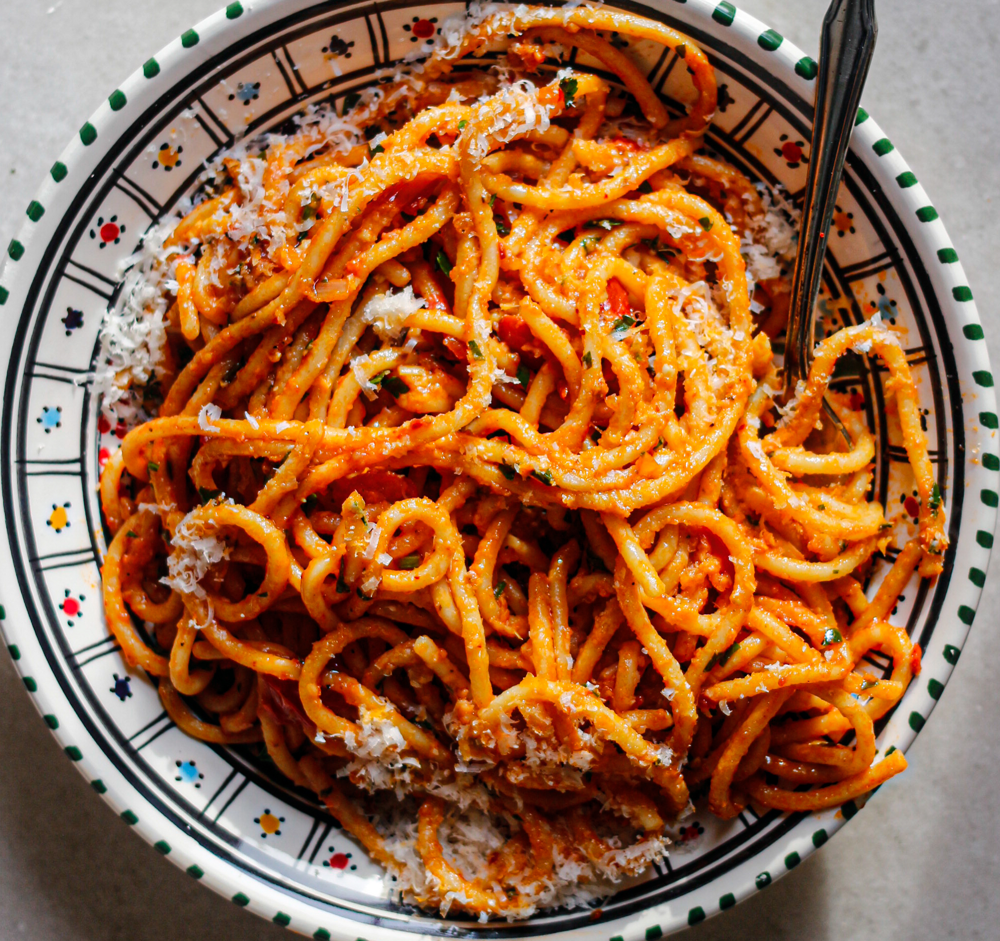

Spaghetti Arrabbiata

Finished Spaghetti Arrabbiata
This recipe will show you how to create a quick and easy arrabbiata. The process should take no longer than 20mins. Leaving you with a tasty ready to go italian dish to add to your repetoire.
Ingerdients
- Spaghetti
- Tomatos
- Chillies, red and green
- Garlic
Steps
- Heat up a pan with oil on low/medium heat.
- Chop up garlic and chillies and add them to the pan.
- Stir pan until fully covered in oil.
- Chop and add tomatos to pan.
- Stir while cooking.
- Heat up water and get to boiling point.
- Add pasta to boiling water.
- Drain pasta.
- Dish up and enjoy! Your food is ready to go.
Home
You May Also Like Spaghetti Carbonara / Spaghetti Bolognese